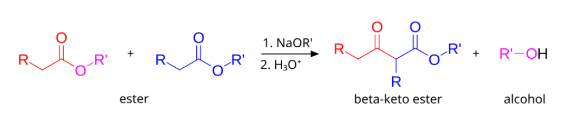
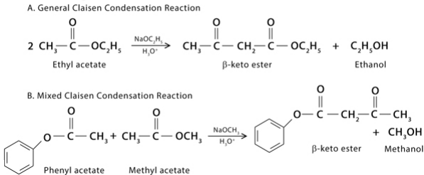
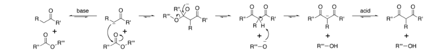

The Claisen condensation is a carbon-carbon bond forming reaction that occurs between two esters or one ester and another carbonyl compound in the presence of a strong base. The reaction produces a ẞ-keto ester or a ẞ-diketone.It is named after Rainer Ludwig Claisen, who first published his work on the reaction in 1887.


In the first step of the mechanism, an a-proton is removed by a strong base, resulting in the formation of an enolate anion,
which is made relatively stable by the delocalization of electrons. Next, the carbonyl carbon of the (other) ester is
nucleophilically attacked by the enolate anion. The alkoxy group is then eliminated (resulting in (re)generation of the alkoxide),
and the alkoxide removes the newly formed doubly a-proton to form a new, highly resonance-stabilized enolate anion.
Aqueous acid (e.g. sulfuric acid or phosphoric acid) is added in the final step to neutralize the enolate and any base still present.
The newly formed ẞ-keto ester or ẞ-diketone is then isolated. Note that the reaction requires a stoichiometric amount of base as
the removal of the doubly a-proton thermodynamically drives the otherwise endergonic reaction. That is, Claisen condensation does
not work with substrates having only one a-hydrogen because of the driving force effect of deprotonation of the ẞ-keto ester in the last step.

Claisen condensation is carried out in:
Acidic medium